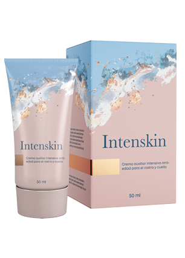

LOS CIENTÍFICOS REJUVENECIERON LAS CÉLULAS DE LA PIEL DURANTE 15 AÑOS

Todo comenzó con un experimento médico. Sus participantes tomaron un medicamento experimental para fortalecer la inmunidad. Como resultado de su recepción, los sujetos rejuvenecieron literalmente.
Los científicos no esperaban resultados similares: querían probar los efectos de varios extractos de plantas específicos en el sistema inmunológico. Después de un mes de tomar un cóctel de verduras por parte de voluntarios, resultó que cada uno de ellos "rejuveneció" en un promedio de 15 años.
Comentario de Estebán Posada, científico líder en el campo del desarrollo de fármacos:
El estudiar los efectos del medicamento, revelamos que estimula las células del cuerpo a funcionar más activamente. La cantidad de radicales libres en la sangre de los sujetos se redujo significativamente. Dos de estos factores afectaron directamente la condición de la piel de los sujetos. Decidimos movernos hacia el rejuvenecimiento.
Se tomó la misma composición y se produjo una crema externa. Volvieron a reclutar a un grupo de voluntarios de 45 a 60 años y realizaron un experimento. La crema se aplicó durante un mes dos veces al día. Después del experimento, las caras de los voluntarios parecían un promedio de 8 años más jóvenes.
Los científicos estudiaron las células de la piel después de aplicar la crema. Comenzaron a funcionar varias veces más activamente, podrían compararse con las células de la piel humana a la edad de 25 años. Los procesos metabólicos se aceleraron, los fibroblastos comenzaron a producir tres veces más colágeno.
Después del experimento, la actividad celular siguió siendo alta. Solo seis meses después comenzó a caer apenas perceptiblemente.
Varias fotos de voluntarios que acordaron mostrar su resultado publicamente de la crema experimentak


Estas fotos se han extendido rápidamente por Internet y han levantado una ola de personas que desean comprar un medicamento antienvejecimiento. Esto empujó a los científicos a ponerlo en producción, firmando un contrato con el fabricante. Ahora el compuesto se produce bajo el nombre . No tiene análogos, aunque otros fabricantes están tratando de hacer algo similar.

La crema se vende en varias tiendas de América y en el sitio web oficial del fabricante. Cualquier persona puede probar un nuevo instrumento , haciendo una solicitud.
Comentarios:Pamela5122.06.2021Esta crema reemplazará la mayoría de los tratamientos antienvejecimiento, estoy seguro de elloReina González23.06.2021Durante mucho tiempo, no se produjo nada fresco y natural) la primera vez que se realizó un pedido a través de Internet a nuestro país aún no había llegado a los estantes, ¡y quiero probarlo! Dejé la solicitud, llamé, tuve la consulta, me dijo que pronto lo entregaríanSara H.25.06.2021¡Lo he estado esperando durante mucho tiempo, genialísimo, finalmente se puede comprar! Leí los comentarios sobre el producto, todo el mundo está más que encantadoEsmeralda Amador26.06.2021Recientemente llegó la crema, la primera impresión fue: lo genial que se veía. Después de un par de aplicaciones, me di cuenta de que era para mí, se absorbe rápidamente y no se desliza. Después de una semana, la cara se iluminó directamente, las arrugas se suavizaron ligeramente y dejaron de ser pronunciadas. En general, todos las bebemos necesariamente!Sunny5526.06.2021¿Dónde la compraste?Gabriel Quesada27.06.2021Tomó en el mismo sitio que aparece en este artículo. Encontré un par de otras tiendas en línea, pero son como revendedores, el precio allí es tres veces más.Elena29.06.2021Pensé que esa era imposible... ¿ cómo se puede rejuvenecer la cara sin inyecciones? He estado usando esta crema durante tres semanas y no puedo creer con mis ojos ... la cara está suave, hidratada, tensa, el contorno se ha vuelto más claro. Estoy sorprendidísima…Marta Bravo30.06.2021¡Antes de eso había usado una crema que costaba 3 veces más que esta. Se acomodaba como una película, gruesa, pero su efecto era nulo. Cuando empecé a usar sentí la diferencia. La crema se absorbe instantáneamente – ¡inmediatamente se ve que hay menos sintéticos en la composición!Daniela30.06.2021Ahora solo puedo usar a cremas naturales. Mi piel es problemática, constantemente se irrita, luego aparecen las erupciones. Antes de eso, las cremas naturales hidrataban la piel al máximo, y realmente tiene efecto. Esta crema es todo un descubrimiento para míSara V.02.07.2021Es difícil para mí elegir una crema, porque básicamente todas obstruyen los poros y causan erupciones. Esta encaja perfectamente. ¡Pero lo más importante es que realmente me salvó de las arrugas en la cara! Pedí otro paquete más.Mia03.07.2021Tengo 48. Llevo haciendo gimnasia facial durante seis meses. No me niego a usar remedios tradicionales:)) Nunca repetí las cremas porque... no tenían nungún efecto. Además de las marcas lujosas que son muy caras. Hace poco ordené . Mi óvalo de la cara! Me devolvió el óvalo de la cara. De nuevo veo mi línea de la barbilla, todo se ve más estirado. Obviamente, no sin gimnasia, pero observo un efecto tan notorio solo ahora.Carla04.07.2021¡Hola! Sirve para mayores de 65 años?Manuela S.05.07.2021Carla, no lo dudes, la crema tiene una buena composición, después de los 35, todos la podemos usar:))Sandra E.06.07.2021El cosmetólogo dice que mi tipo es de arrugas pequeñas. Le preguntaré sobre esta crema.Dani198806.07.2021Tengo 32 años, debido al estrés extremo, me aparecieron arrugas profundas en la frente y los pliegues nasolabiales. Mis amigas que son mayores me aconsejan ponerme inyecciones. es mi última esperanza!Pati08.07.2021A mis 59 voy muy bien con el pasar del tiempo. Escogí para mi cuidado diario. Les deseo bondad y amor!¿Quieres escribir un mensaje?